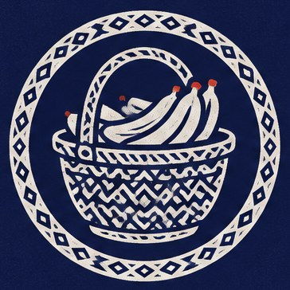
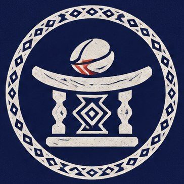

01 · la nuit en un coup d'œil
Une nuit qui monte en intensité
On commence par des jeux qui font se rencontrer, on garde la stratégie lourde pour après le repas, et on finit par la finale à 4 joueurs.
- 19h30Accueil, badges, cotisation, 10 Kola par joueur30 min
- 20h00

Le Marché de Mokolo30 min - 20h40Qui est qui ?40 min
- 21h25
 Le Njangi30 min
Le Njangi30 min - 22h00
 Le Carrefour des Duos45 min
Le Carrefour des Duos45 min - 22h45Repas et musique60 min
- 23h45
 Le Pont du Wouri45 min
Le Pont du Wouri45 min - 00h40
 Le Code du Chef50 min
Le Code du Chef50 min - 01h30Pause20 min
- 01h50Les Feymen50 min
- 02h45Conversion des Kola, classement, finalistes15 min
- 03h00

Finale : Le Trône de Kola30 min - 03h30Remise des gains, photo de groupe15 min
- 03h45Ambiance libre jusqu'au matin
Les principes
- Méninges d'abord : déduction, négociation, alliances, enchères.
- On se mélange : équipes tirées au sort à chaque jeu, au moins une fille et un garçon par équipe.
- Une monnaie qui circule : 10 Kola par joueur à l'arrivée. On les mise, on les échange. À la fin, 1 Kola = 1 PW.
- Peu de matériel : jetons, enveloppes, cartes imprimées.
Si on prend du retard
On retire le Njangi : c'est le jeu le plus court à sauter sans casser l'équilibre des points.
Plus de 20 joueurs ?
Équipes de 4 au lieu de 3, et 1 feyman par tranche de 6 joueurs. Avec 15 joueurs, 5 équipes de 3.